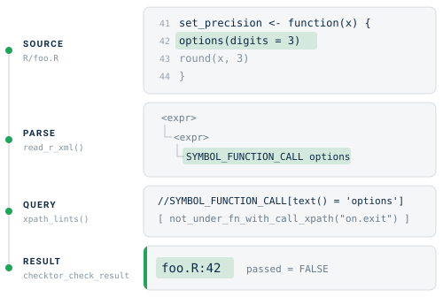
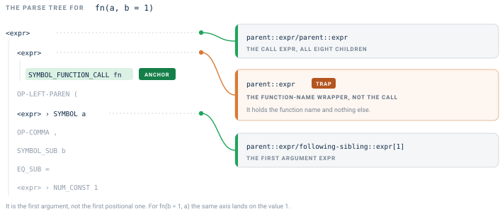
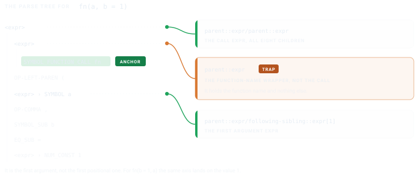
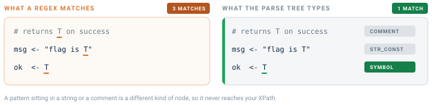
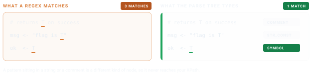

checktor includes more than forty checks, but every team has house rules too local to upstream: a function you have banned, a header you insist on, a habit you keep relapsing into. This vignette is for those. It walks through the handful of helpers in R/ast.R and shows how to author a new check against the parsed syntax tree in a few lines of XPath, with the orchestrator handling the bookkeeping.
Every check walks the same road. Your sources are parsed once into a syntax tree, an XPath query picks out the nodes you object to, and each match comes back as a file:line string inside a result that knows how to print itself. The figure traces that road for one of the built-in checks, the one that flags an options() call whose enclosing function never puts the setting back.


The shape of a check
An individual check is named lab_<name>(), where <name> is the check name that checktor() reports in tidy()$check and that Config/checktor fields refer to. Keeping those the same means a reader who sees a finding knows the function to call. The five category functions keep their own names, since each runs a whole panel rather than one test. Four are diagnose_<category>_issues(), and the policy panel is diagnose_policy_violations().
Every check follows the same contract:
lab_<name> <- function(path, verbose = TRUE, parsed = NULL) {
if (is.null(parsed)) parsed <- read_r_xml(path)
if (length(parsed) == 0L) {
return(checktor_check_result(TRUE, character(0), "<message>"))
}
# ... XPath logic ...
checktor_check_result(passed, issues, "<message>")
}Why the
parsedargument? It holds an optional parse-cache, so whenchecktor()runs all code-side checks together, it parses each file once and hands the cache to every check. Fifteen code-side checks against a 200-file package then mean 200 parses rather than 3,000.
Helpers in R/ast.R
R/ast.R collects the shared machinery, and a check leans on the handful below in roughly the order of the road above. read_r_xml() does the parsing and xpath_lints() does the querying, so between them they carry every check in the package. The rest are shorthands for patterns common enough to have earned a name. Learn the first two and you can already write a check.
read_r_xml(path)
This is what makes your sources queryable. It parses every R/*.R file in the package and returns a named list of list(file, xml, error). A parse failure becomes an error slot instead of crashing the run.
parsed <- read_r_xml(".")
str(parsed[[1]])
#> List of 3
#> $ file : chr "R/foo.R"
#> $ xml : xml_document
#> $ error: NULLThe xml slot is an xml2 document produced by xmlparsedata::xml_parse_data(). Every parse-tree token is an XML element with line1, col1, line2, col2 attributes.
xpath_lints(parsed, xpath, label = NULL)
The workhorse. Give it an XPath query, get back "basename:line" strings for every match across every file, ready to hand to a check result’s $issues. The optional label appears in parens after each hit.
hits <- xpath_lints(parsed,
"//SYMBOL_FUNCTION_CALL[text() = 'set.seed']")
#> "foo.R:42" "bar.R:17"
undesirable_function_check(parsed, funs, label = TRUE)
The most common pattern, “flag any call to function X”, has a canned helper:
issues <- undesirable_function_check(parsed,
c("install.packages", "browser"))This is checktor’s equivalent of lintr::undesirable_function_linter().
not_under_fn_with_call_xpath(funs)
Returns an XPath predicate that restricts hits to nodes whose innermost enclosing function-body doesn’t also contain a call to any of funs. This is how option_changes enforces that options() is guarded by a sibling on.exit() in the same function, and the “innermost” part is what makes it correct on nested functions where on.exit in the outer function wouldn’t cover an inner one.
predicate <- not_under_fn_with_call_xpath(c("on.exit", "local_options"))
xpath <- paste0(
"//SYMBOL_FUNCTION_CALL[text() = 'options']",
"[", predicate, "]"
)
extract_rd_section(rd, tag) and collect_rd_text(node, skip)
Walking .Rd files structurally via tools::parse_Rd():
rd <- tools::parse_Rd("man/my_fn.Rd")
ex <- extract_rd_section(rd, "\\examples")
collect_rd_text(ex, skip = "\\dontrun")Walked example: Sys.setenv() without cleanup
Suppose we want a check that flags any Sys.setenv() call whose enclosing function doesn’t also call on.exit(Sys.unsetenv(...)) or withr::local_envvar(). This is the same shape as lab_option_changes and is built into checktor as lab_sys_setenv. Here is the essential shape:
lab_sys_setenv <- function(path, verbose = TRUE,
parsed = NULL) {
# reuse the parse-cache when checktor() supplies one, else parse fresh
if (is.null(parsed)) parsed <- read_r_xml(path)
if (length(parsed) == 0L) {
return(checktor_check_result(TRUE, character(0),
"Sys.setenv reset check"))
}
xpath <- paste0(
"//SYMBOL_FUNCTION_CALL[text() = 'Sys.setenv'][",
# keep only calls whose enclosing function never resets the variable
" ", not_under_fn_with_call_xpath(c(
"on.exit",
"Sys.unsetenv",
"local_envvar", "with_envvar"
)),
"]"
)
issues <- xpath_lints(parsed, xpath)
passed <- length(issues) == 0L
# a built-in check also calls emit_issue_summary(issues, verbose, ...) here
# to print the cli summary when verbose = TRUE
checktor_check_result(passed, issues, "Sys.setenv reset check")
}Twenty lines, and the interesting one is the XPath predicate. Everything else is bookkeeping shared with every other check. The built-in version adds one refinement, exempting a setter that captures the old value and hands it back (old <- get_env(); Sys.setenv(...); invisible(old)), since that is a restore contract rather than a leak. Refinements like that are where a real check earns its keep, but the skeleton is exactly this.
The xmlparsedata XML structure
A call fn(a, b = 1) parses to:
<expr> <!-- call expr -->
<expr> <!-- function-name expr -->
<SYMBOL_FUNCTION_CALL>fn</SYMBOL_FUNCTION_CALL>
</expr>
<OP-LEFT-PAREN>(
<expr><SYMBOL>a</SYMBOL></expr> <!-- first positional arg -->
<OP-COMMA>,
<SYMBOL_SUB>b</SYMBOL_SUB> <!-- named-arg name -->
<EQ_SUB>=</EQ_SUB>
<expr><NUM_CONST>1</NUM_CONST></expr> <!-- named-arg value -->
<OP-RIGHT-PAREN>)
</expr>Anchor on the SYMBOL_FUNCTION_CALL and every other node is one axis away. The amber card is the one that catches people out.


- the call expr is
parent::expr/parent::expr - the first argument expr is
parent::expr/following-sibling::expr[1] - a named-arg name is
parent::expr/parent::expr/SYMBOL_SUB
That middle one is the first argument, not the first positional argument. For fn(b = 1, a) the same axis lands on the value 1, so reach for it only when you already know the shape of the call.
Trying it out
# Parse a file
parsed <- read_r_xml("path/to/package")
# Find every call to install.packages()
xpath_lints(parsed,
"//SYMBOL_FUNCTION_CALL[text() = 'install.packages']")Wiring it into checktor()
A finished lab_* function does nothing until checktor() knows to call it. register_check() connects the two at run time, with no edit to checktor’s own source:
lab_my_check <- function(path, verbose = TRUE, parsed = NULL) {
if (is.null(parsed)) parsed <- read_r_xml(path)
issues <- undesirable_function_check(parsed, "banned")
checktor_check_result(length(issues) == 0L, issues, "no banned()")
}
register_check("my_check", lab_my_check,
category = "code", severity = "policy")From then on every checktor() run includes my_check. It appears in issues(), tidy() and the printed report under that name, and counts toward the verdict at the tier you gave it.
A few things worth knowing:
- The function returns a
checktor_check_result(), the same shape as every built-in check, sorun_checks()handles its error catching and$passedbookkeeping. - checktor calls it as
fn(path, verbose). If the function also declares aparsedargument (forcodeandpolicychecks) or adescargument (fordescriptionchecks), checktor forwards its shared cache, so your check reuses the one parse instead of re-reading the sources. -
categoryis one ofcode,description,documentation,generalorpolicy; the check runs alongside that category’s built-ins. -
severityispolicy,robustnessoropinion, and decides whether a finding counts against a clean bill of health underchecktor()’sseverityargument.
registered_checks() lists what is currently registered, and unregister_check("my_check") (or unregister_check() for all) removes it. The registry is session-scoped, so call register_check() somewhere it runs before your check is needed: a project .Rprofile, your own package’s .onLoad(), or the top of a CI script.
The helpers the example leans on are exported too, so a check you register has the same toolkit the built-ins use: read_r_xml(), xpath_lints(), xpath_per_file(), undesirable_function_check(), not_under_fn_with_call_xpath(), and the .Rd walkers extract_rd_section() and collect_rd_text().
Contributing a check to checktor itself? Then skip the registry and wire it the way the built-in checks are: add
lab_my_check()to the rightR/diagnostics-*.Rfile, add one line to that file’s category function inside itsrun_checks(list(...))call (my_check = function(p, v) lab_my_check(p, v, parsed = parsed)), and give it a tier inCHECK_SEVERITY(R/severity.R).
Without writing code
Some house rules need no new check at all. A package configures checktor from Config/checktor/* fields in its own DESCRIPTION:
Config/checktor/software_names: brms, cmdstanr # flag these names when unquoted
Config/checktor/acronyms: MCMC, GLMM # these domain acronyms are fine
Config/checktor/allow: urls:README.md # mute a finding you have reviewed
Config/checktor/disable: news_file # turn a check off entirelysoftware_names and acronyms extend the vocabularies those checks already use; allow mutes a specific finding, either a whole check or a check:substring, which is what a green checkup() gate needs when a finding has been reviewed and accepted. disable skips a check outright. Write a check of your own when the rule is genuinely yours, and reach for Config/checktor/* when you only need to teach or quiet a check checktor already includes.
Conclusion
Building on the parsed syntax tree buys the property that makes checktor trustworthy, because a pattern sitting in a string literal or a comment is a different kind of node than a real call, so it never false-positives.


Write the XPath, let run_checks() carry the rest, and your house rule is enforced as rigorously as the built-in checks.
See also
- Getting Started with checktor: end-to-end usage from a user’s perspective.
-
checktor in Continuous Integration: run
checkup()as a build gate. -
?xmlparsedata::xml_parse_dataand the lintr docs on writing linters for the same patterns at a larger scale.